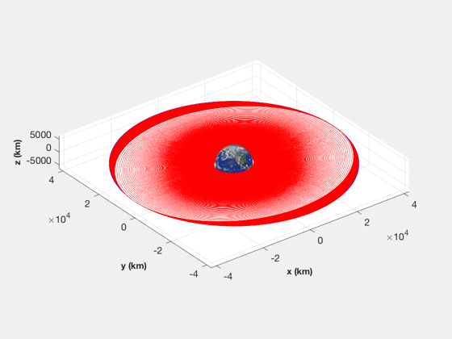
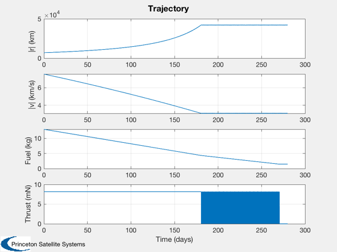
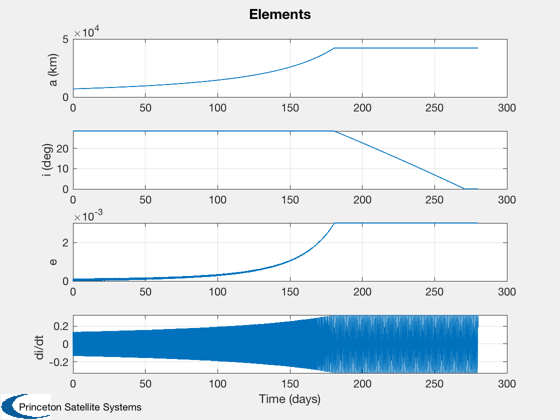

Low thrust geo transfer simulation
Corrects both semi-major axis and inclination. It corrects the semi-major axis first then the inclination. Uses a right-hand-side function in the script and integration with RK4. A time window displays the simulation progress.
See also: InclinationRate, EclipseDuration, TimeDisplay
Contents
%-------------------------------------------------------------------------- % Copyright (c) 2017 Princeton Satellite Systems, Inc. % All Rights Reserved. %-------------------------------------------------------------------------- % Since 2017.1 %--------------------------------------------------------------------------
Setup
elC = [7000 28.6*pi/180 0 0 0 0]; fEcl = EclipseDuration( elC(1) ); power = 200; eff = 0.6; specP = 1/200; % kWh/kg rGeo = 42167; elG = [rGeo 0 0 0 0 0]; dT = 60; nDays = 280; mu = 3.98600436e5; d.uE = 1500*9.806; % Exhaust velocity (m/s) thrust = power*eff/d.uE; d.mD = 20; % Dry mass (kg) jD0 = Date2JD([2020 5 5 0 0 0]); mFuel = 13; % kg radToDeg = 180/pi;
Constants
dEcl = EclipseDuration( elC(1), 6378.165, 0 )*Period(elC(1)); bMass = specP*power*dEcl/3600; [r,v] = El2RV(elC); vMagGeo = sqrt(mu/42167); tEnd = nDays*24*3600; n = ceil(tEnd/dT); xP = zeros(12,n); x = [r;v;mFuel]; done = false; atGeo = false; t = (0:n-1)*dT; threshold = 0.5;
Run the simulation
TimeDisplay( 'initialize', 'GeoTransferSim', n ); for k = 1:n TimeDisplay( 'update' ); r = x(1:3); v = x(4:6); el = RV2El(r,v); if( done ) d.thrust = [0;0;0]; elseif( atGeo ) [dI, uN, dIMax] = InclinationRate( x ); if( abs(dI) > threshold*dIMax ) d.thrust = -thrust*sign(dI)*uN; else d.thrust = [0;0;0]; end else d.thrust = Unit(v)*thrust; end if (Mag(r) >= rGeo) atGeo = true; end i = el(2)*radToDeg; if( atGeo && i < 0.1 ) done = true; end [dI, uN] = InclinationRate( x ); xP(:,k) = [x;Mag(d.thrust);el(1);i;el(5);dI]; x = RK4(@RHS,x,dT,0,d); end TimeDisplay( 'close' )
Plot
r0 = RVOrbGen(elG,t); [t,tL] = TimeLabl(t); NewFig('Orbits') Map('Earth','3d',true); hold on plot(xP(1,:),xP(2,:),'r'); hold on plot(r0(1,:),r0(2,:),'b--'); grid on axis image hold off rMag = Mag(xP(1:3,:)); vMag = Mag(xP(4:6,:)); yL = {'|r| (km)' '|v| (km/s)' 'Fuel (kg)' 'Thrust (mN)' 'a (km)' 'i (deg)' 'e' 'di/dt'}; Plot2D(t,[rMag;vMag;xP(7,:);xP(8,:)*1000],tL,yL(1:4),'Trajectory') Plot2D(t,xP(9:12,:),tL,yL(5:8),'Elements')  
Right hand side
function xDot = RHS(x,~,d) r = x(1:3); v = x(4:6); mF = x(7); if( mF <= 0 ) d.thrust = [0;0;0]; end mu = 3.98600436e5; m = mF + d.mD; xDot = [v;-mu*r/Mag(r)^3 + 0.001*d.thrust/m;-Mag(d.thrust)/d.uE]; end %--------------------------------------